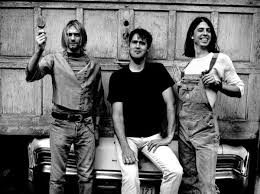
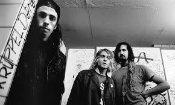
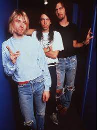

After the break up of Scream, Dave then went to Buzz Osborne for advice and told him Nirvana was looking for a drummer. He then auditioned and join the band. At this point, Nirvana had alread recorded multiple albums and EPs.

In the early months of Grohl being in the band, they spent a lot of time searching for a good record deal. Once they found a good deal, they went on to record Nevermind in the spring of 1991.

Home
With the success of Nevermind, Dave began to have more contribuition to Nirvana as a whole. At this point he also began to record his own music with Kurt Cobain later praising his work. Later Nirvana recorded their last "You Know you're right" as Cobian was found dead later that year. Thus ending the band.